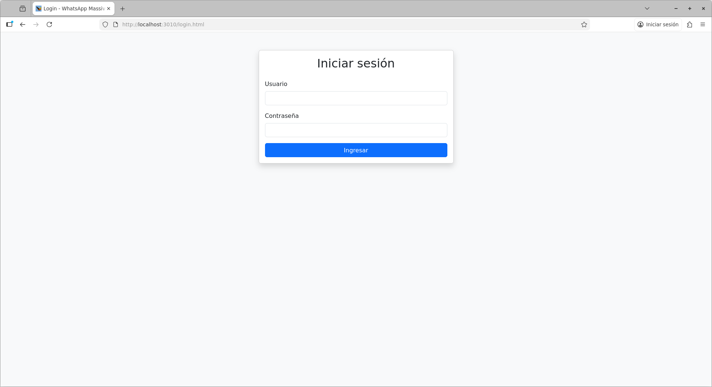
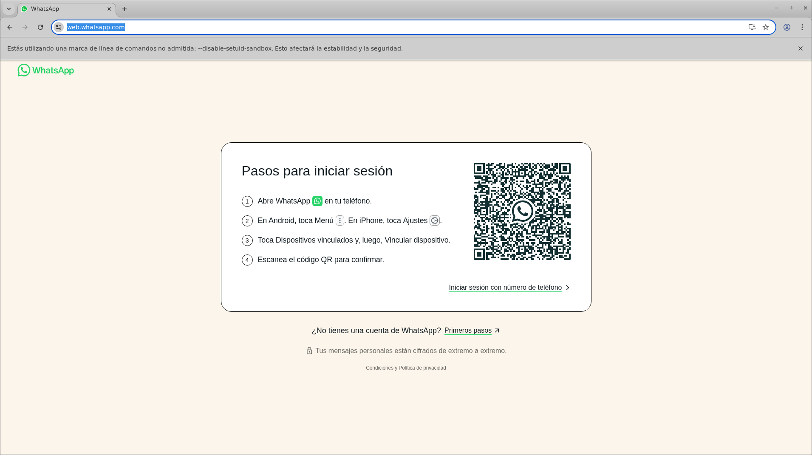
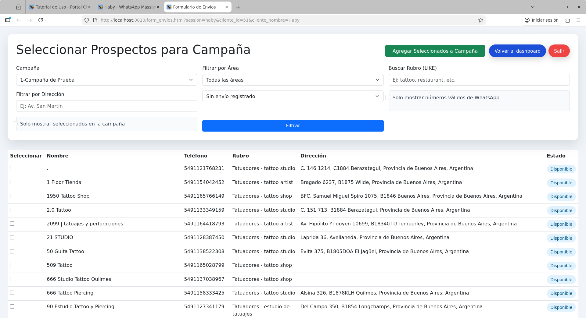
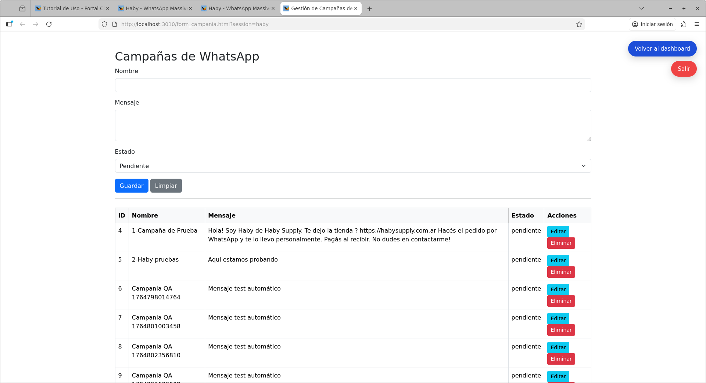
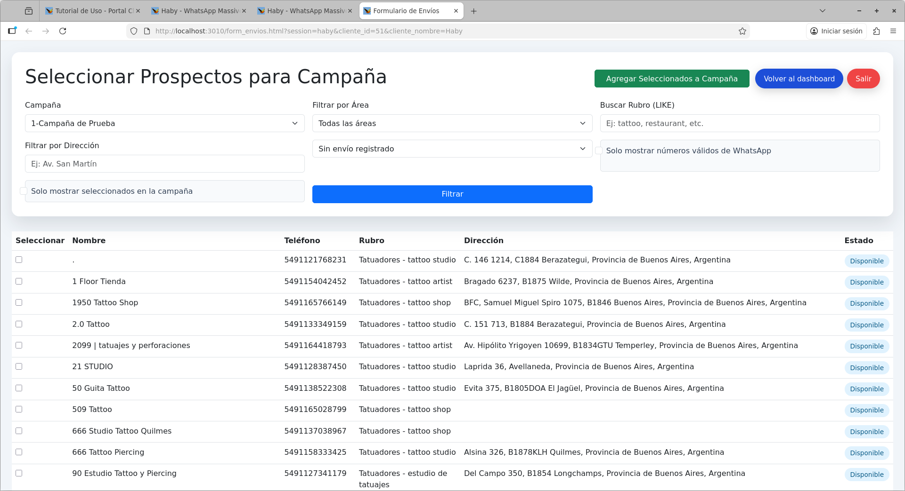
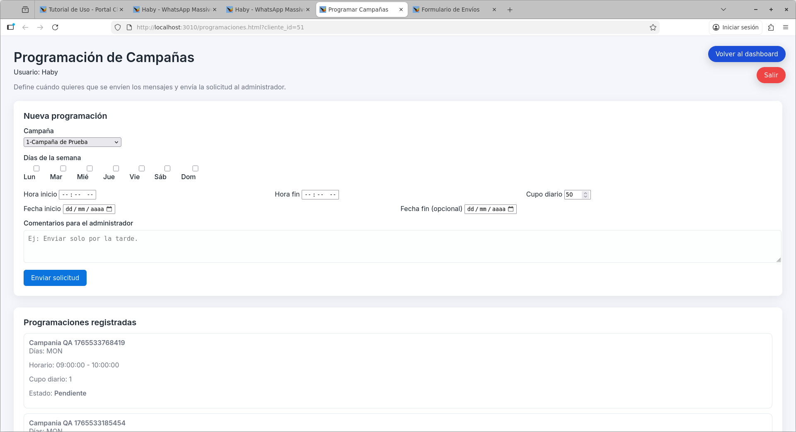

1. Ingreso al Portal
Accede al portal desde la URL proporcionada por el administrador. Ingresa tu usuario y contraseña en la pantalla de login.
2. Ver Campañas
Al abrir el panel, el cliente debe hacer clic en Ver Campañas para consultar el estado y resultados de sus campañas activas y pasadas.

3. Iniciar sesión de WhatsApp
Es necesario iniciar sesión de WhatsApp para que el sistema pueda enviar mensajes. Haz clic en Iniciar sesión de WhatsApp y escanea el código QR con tu app de WhatsApp. Esto vincula tu cuenta y permite el envío masivo.
4. Filtrar Prospectos
Utiliza el filtro de rubro para buscar prospectos específicos. Haz clic en Filtrar para ver los resultados. Así puedes segmentar tus envíos según el tipo de cliente.
5. Formulario de Campañas
El formulario de campañas te permite crear y configurar nuevas campañas de mensajes. Aquí defines el mensaje, adjuntas archivos y seleccionas los prospectos a contactar.
6. Seleccionar Prospectos
Selecciona los prospectos a los que deseas enviar mensajes. Esto te permite personalizar y segmentar tus campañas según tus necesidades.
7. Programar Campañas
Puedes programar campañas para que los mensajes se envíen en una fecha y hora específica. Esto es útil para planificar envíos automáticos.
8. Ver Campañas
Consulta el historial y estado de tus campañas en la sección Ver Campañas. Aquí puedes ver resultados, estadísticas y detalles de cada envío.

9. Cerrar Sesión
Para salir del portal, haz clic en el botón de cerrar sesión en la parte superior derecha. Es recomendable cerrar sesión cuando termines para proteger tu cuenta.